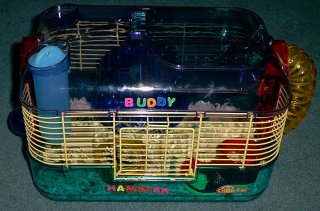

Digger is Joshua's pet hamster. We got him after
the other pet hamster died. We got him at the pet store - called PetSmart.
This is his cage.

The cage has a lookout and observation deck. We can
hold him and touch him here, and he is very curious.